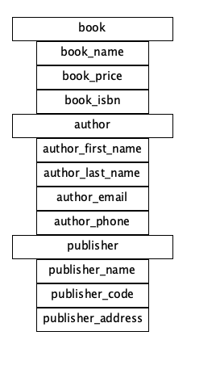
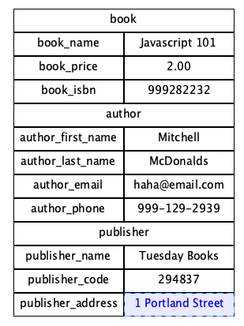
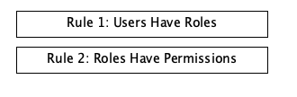
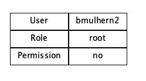

Data Diagrams
Automated Tests
HomePage
Two Pizza Rule
mulhern-Tech-Value-Stream
Oath-Security
Microservices
SOA
Hypermedia design
SOAP APIs
Data-Diagrams
JSON APIs
API-Gateway
bioSite
web-330
web-231
ORD Data Diagrams
NoSQL Data Diagram
ORD Data Diagram 2

NoSQL Data Diagram 2

Business Rules

NoSQL Data Structure 3
